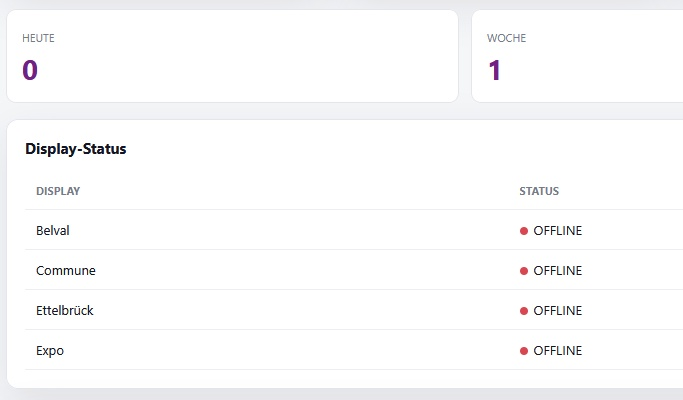

Overview
UniPop Signage is a complete digital signage system created to present current courses and information on screens installed at different UniPop locations.
Instead of maintaining every display separately, the system uses a central web-based builder where courses can be selected, images assigned and individual playlists created for each location.
The connected display devices automatically show the content assigned to them, creating a centrally managed communication system that can be updated without physically accessing the screens.
Project details
The main objective was to replace a traditional static signage workflow with a flexible system that uses the existing UniPop course data as its central information source.
The signage builder loads current course information and makes it possible to search and select courses for individual display locations. Each screen can have its own playlist, allowing the content to be adapted to the audience and location where the display is installed.
Course information such as title, date, location and description is combined automatically with an individual image and a QR code. Visitors can therefore discover a course directly on the screen and scan the QR code to access the corresponding online information.
The system was designed not only as a slideshow but as a complete content-management workflow. Playlists can be modified remotely, course images can be updated and new display locations can be added without rebuilding the complete application.
Central playlist builder
A web-based control interface allows courses to be selected, arranged and assigned to individual signage locations.
Multiple locations
Each display can receive its own playlist, allowing different course selections to be shown at different UniPop sites.
Course database integration
Current course information is loaded from the UniPop course data source instead of being entered manually for each screen.
Dynamic QR codes
Each displayed course includes a QR code that gives visitors direct access to the corresponding course information.
Remote content updates
Playlist changes and new course selections can be published centrally without physically accessing the display computer.
Raspberry Pi displays
Compact Raspberry Pi systems can operate as dedicated fullscreen display clients connected directly to the signage screens.
Integrated printing
The system can also generate a physical course flyer directly from the displayed information, extending the digital signage workflow into print.
Statistics & monitoring
Print activity and display status can be monitored, providing additional information about the use of the individual signage stations.
Technology
UniPop Signage is built as a browser-based distributed system using HTML, CSS and JavaScript for both the management interface and the individual display pages.
Structured course data provides the content displayed by the system. The builder combines this information with uploaded images, playlist configuration and automatically generated QR codes.
Supabase is used for central data storage and synchronisation. Playlist information and associated media can therefore be shared between the management interface and the individual signage displays without requiring a traditional local server.
At the display locations, Raspberry Pi systems can operate in fullscreen kiosk mode. After startup, each device automatically loads the display page assigned to its location and continuously presents the corresponding playlist.
Media & demo
The screenshots below show the complete UniPop Signage workflow: from selecting current courses and building location-specific playlists to the final fullscreen presentation on the signage displays.
The examples can include the central builder, course selection, playlist management, screen preview, the final display interface, QR-code integration and the physical print function.





UniPop Signage — project screenshots